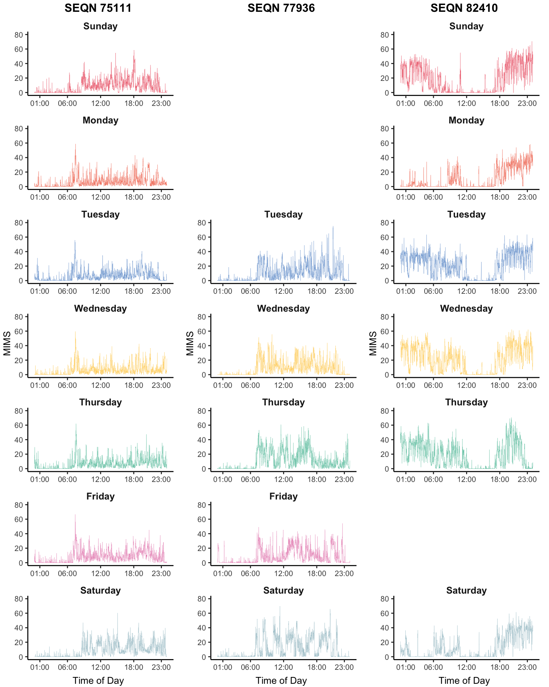
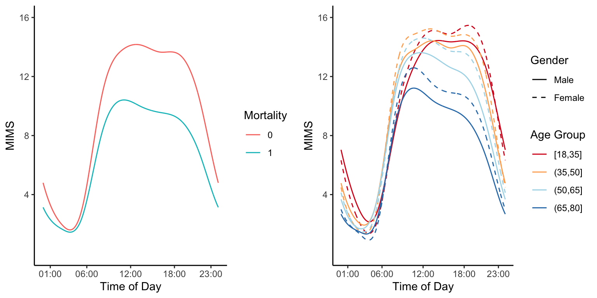
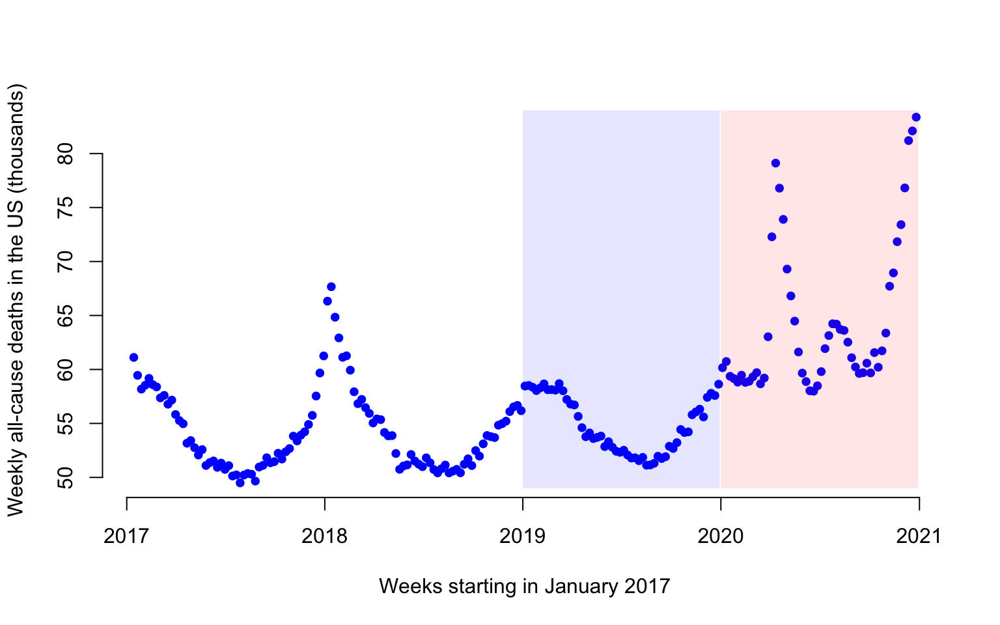
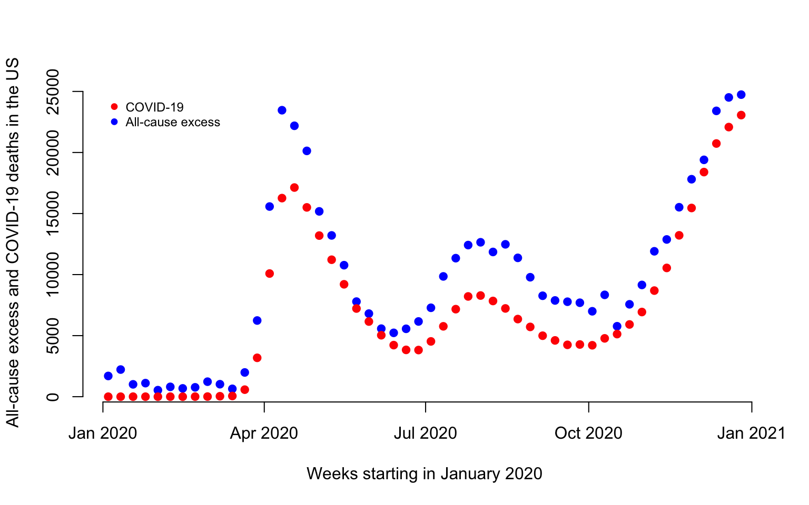
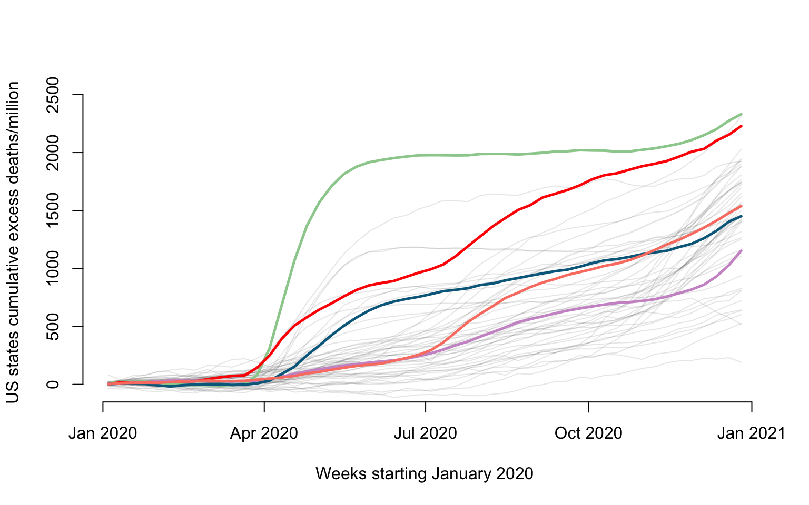
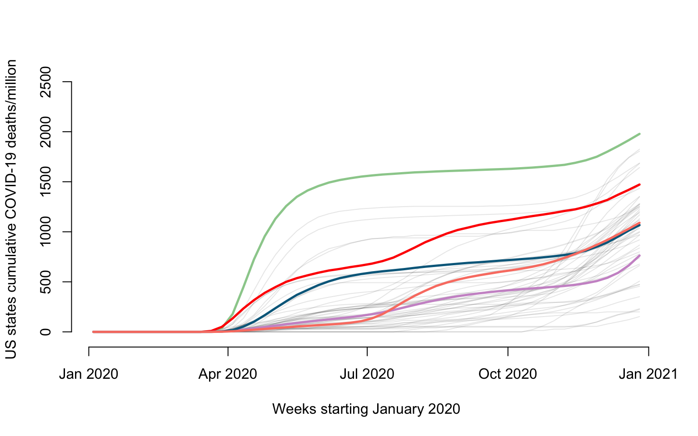
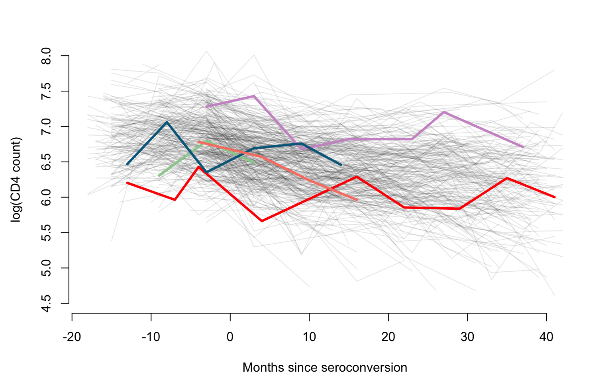
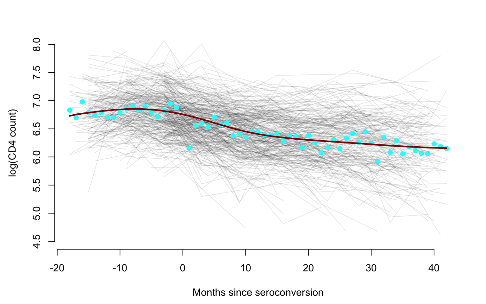
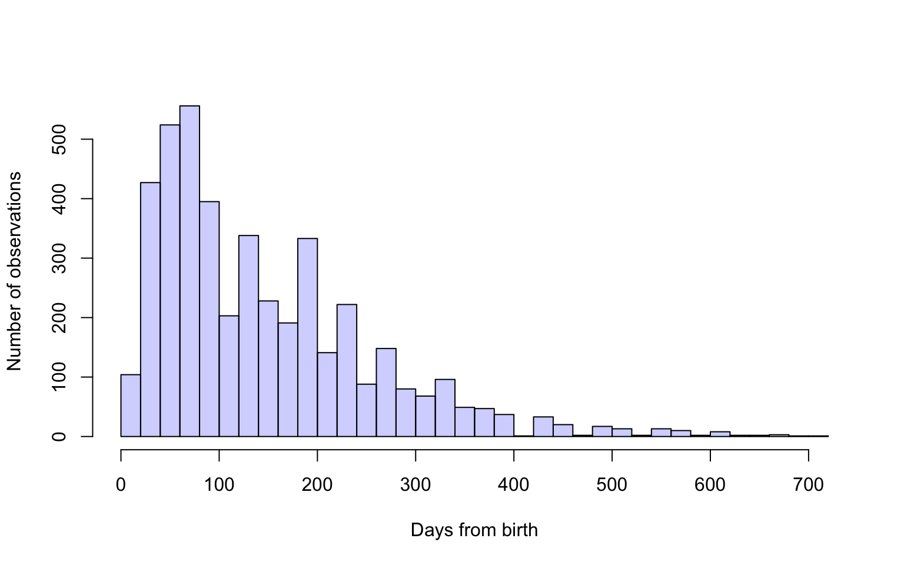
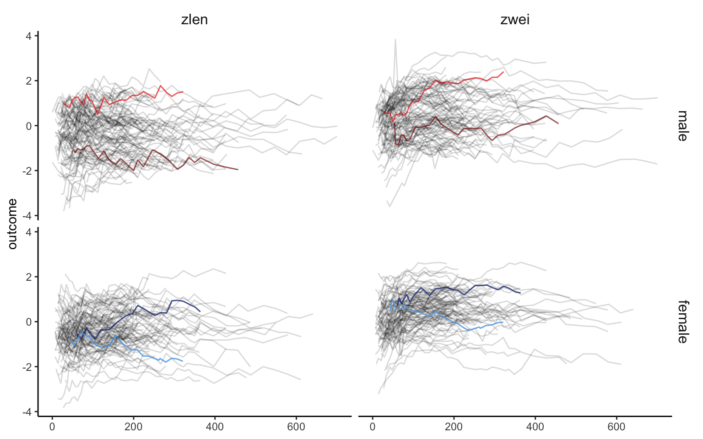

The NHANES 2011-2014 Accelerometry Data is a very large data set. (NEED TO UPDATE) For now, we load it locally and provide exploratory plots shown in the book.
library(tidyverse)
library(ggplot2)
library(gridExtra)
library(ggpubr)
## load NHANES data
data <- readRDS("./data/nhanes_fda_with_r_ml.rds")
## plot NHANES data
id <- c(75111,77936,82410)
unit <- "MIMS"
upper <- 80
dow <- c("Sunday","Monday","Tuesday","Wednesday","Thursday","Friday","Saturday")
col_pal <- c("#EC5565", "#F26E53", "#6798D0", "#FFCE55", "#5BC1A6", "#E788B8", "#9EBFC9")
## layout matrix for the plot
layout_subj <- layout_all <- matrix(NA, nrow = length(dow), ncol = length(id))
plt <- list() ## a list storing the entire plot
ind_all <- 1 ## the panel number of the entire plot
for(i in 1:length(id)){
ind_subj <- 1 ## the panel number within each subject
id_ind <- which(data$SEQN == id[i])
## extract subject level data and organize them into long format
df_wide <- data.frame(unclass(data[id_ind,unit]),
dow = dow[as.numeric(data$dayofweek[id_ind])])
colnames(df_wide)[1:1440] <- 1:1440
df_long <- pivot_longer(df_wide, cols = 1:1440, names_to = "minute", values_to = "value")
df_long$minute <- as.numeric(df_long$minute)
df_long$dow <- factor(df_long$dow, levels = dow)
df_long$id <- id[i]
## make the plot panel by panel
for(j in dow){
df_plt <- df_long %>% filter(dow == j)
if(nrow(df_plt) != 0){ ## if the subject has data on this day of week
plt[[ind_all]] <- ggplot(df_plt) +
theme_classic() +
geom_line(aes(x = minute, y = value, group = dow), lwd = 0.1, col = col_pal[which(dow == j)]) +
facet_wrap(.~dow, ncol = 1, scales = "fixed") +
theme(strip.text = element_text(size = 10, face = "bold", margin = margin(0.2, 0, 0.05, 0, "cm")),
strip.background = element_blank(),
axis.title = element_blank(),
axis.text = element_text(size = 8),
plot.margin = margin(1,10,2,1)) +
scale_x_continuous(breaks = c(1,6,12,18,23)*60,
labels = c("01:00","06:00","12:00","18:00","23:00")) +
ylim(0, upper)
}else{
plt[[ind_all]] <- ggplot(df_plt) + theme_void()
}
layout_subj[ind_subj, i] <- ind_subj
layout_all[ind_subj, i] <- ind_all
ind_all <- ind_all + 1
ind_subj <- ind_subj + 1
}
}
## plot all panels of the plot
grid.arrange(grobs = lapply(1:length(id), function(i) {
arrangeGrob(grobs = plt[layout_all[,i]],
top = text_grob(paste0("SEQN ",id[i]), face = "bold", size = 12),
bottom = text_grob("Time of Day", size = 10),
left = text_grob(unit, size = 10, rot = 90), ncol = 1,
layout_matrix = layout_subj[,i,drop = FALSE])}), ncol = length(id))
Having multiple days of data for the same individual adds structure and increases its complexity and size. A potential solution is to take averages at the same time of the day within study participants. Here we show the average physical activity data measured in MIMS in NHANES 2011-2014 as a function of the minute of the day in different groups.
library(ggplot2)
library(gridExtra)
library(dplyr)
library(stringr)
library(tidyr)
library(mgcv)
nhanes_lite <- readRDS("./data/nhanes_fda_with_r.rds")
## subset data to create MIMS-by-age plot
nhanes_age <- nhanes_lite
nhanes_age$age_group <- cut(nhanes_age$age, breaks = c(18,35,50,65,80), include.lowest = TRUE)
nhanes_age <- nhanes_age[which(!is.na(nhanes_age$age_group)),]
## subset data to create MIMS-by-mortality plot
nhanes_mort <- nhanes_lite[which(!is.na(nhanes_lite$event)),]
########################################################################################
## calculate average MIMS at each age group between male and female
########################################################################################
nhanes_plot <- nhanes_age %>% group_by(gender, age_group) %>% summarise(n = n())
MIMS_group <- c()
for(i in 1:nrow(nhanes_plot)){
SEQN_group <- nhanes_age$SEQN[which(nhanes_age$gender == nhanes_plot$gender[i] &
nhanes_age$age_group == nhanes_plot$age_group[i])]
MIMS_group <- rbind(MIMS_group, colMeans(nhanes_age$MIMS[which(nhanes_age$SEQN %in% SEQN_group),],
na.rm = TRUE))
}
colnames(MIMS_group) <- 1:1440
# smooth MIMS for each group
for(i in 1:nrow(MIMS_group)){
dat_sm <- data.frame(MIMS = MIMS_group[i,], time = 1:1440)
fit <- gam(MIMS ~ s(time, bs = "cc"), data = dat_sm)
MIMS_group[i,] <- fit$fitted.values
}
nhanes_plot <- data.frame(nhanes_plot, MIMS_group)
## covert to long format to make the plot
nhanes_plot1 <- pivot_longer(nhanes_plot, cols = paste0("X",1:1440), names_to = "minute", values_to = "MIMS")
nhanes_plot1$minute <- as.numeric(str_sub(nhanes_plot1$minute, start = 2))
plot1 <- ggplot(nhanes_plot1) +
theme_classic() +
geom_line(aes(x = minute, y = MIMS, color = age_group, lty = gender)) +
scale_linetype_manual(values=c(1,2)) +
scale_x_continuous(breaks = c(1,6,12,18,23)*60,
labels = c("01:00","06:00","12:00","18:00","23:00")) +
labs(x = "Time of Day", y = "MIMS", color = "Age Group", lty = "Gender") +
scale_y_continuous(breaks = c(4,8,12,16), limits = c(0, 16)) +
scale_color_brewer(palette = "RdYlBu")
########################################################################################
## calculate average MIMS between alive and deceased group
########################################################################################
nhanes_plot <- nhanes_mort %>% group_by(event) %>% summarise(n = n())
MIMS_group <- c()
MIMS_day <- list()
for(i in 1:nrow(nhanes_plot)){
SEQN_group <- nhanes_mort$SEQN[which(nhanes_mort$event == nhanes_plot$event[i])]
MIMS_group <- rbind(MIMS_group, colMeans(nhanes_mort$MIMS[which(nhanes_mort$SEQN %in% SEQN_group),],
na.rm = TRUE))
}
colnames(MIMS_group) <- 1:1440
# smooth MIMS for each group
for(i in 1:nrow(MIMS_group)){
dat_sm <- data.frame(MIMS = MIMS_group[i,], time = 1:1440)
fit <- gam(MIMS ~ s(time, bs = "cc"), data = dat_sm)
MIMS_group[i,] <- fit$fitted.values
}
nhanes_plot <- data.frame(nhanes_plot, MIMS_group)
## covert to long format to make the plot
nhanes_plot2 <- pivot_longer(nhanes_plot, cols = paste0("X",1:1440), names_to = "minute", values_to = "MIMS")
nhanes_plot2$minute <- as.numeric(str_sub(nhanes_plot2$minute, start = 2))
nhanes_plot2$event <- as.factor(nhanes_plot2$event)
plot2 <- ggplot() +
theme_classic() +
geom_line(data = nhanes_plot2, aes(x = minute, y = MIMS, color = event)) +
scale_x_continuous(breaks = c(1,6,12,18,23)*60,
labels = c("01:00","06:00","12:00","18:00","23:00")) +
scale_y_continuous(breaks = c(4,8,12,16), limits = c(0, 16)) +
labs(x = "Time of Day", y = "MIMS", color = "Mortality")
grid.arrange(plot2, plot1, nrow = 1)
Here we provide exploratory plots for all-cause and COVID-19 weekly mortality data in the US. The all-cause mortality data is weekly mortality (week ending on 2017-01-14 to week ending on 2021-04-10) for a total of \(222\) weeks. Data are made available by the National Center for Health Statistics. More precisely, the dataset link is called National and State Estimates of Excess Deaths. It can be accessed from this website. A direct link to the file can be accessed here.
The COVID-19 mortality data is weekly mortality with COVID-19 as cause of death (week ending on 2020-01-04 to week ending on 2021-04-17) for a total of \(68\) weeks. Data are made available by the National Center for Health Statistics. More precisely, the dataset link is called National and State Estimates of Excess Deaths. It can be accessed from this website. A direct link to the file can be accessed here.
A third data set contains the estimated population size for all US states and teritories as of 2020-07-01. The source for these data is Wikipedia.
Our overall goal is to visualize this data with special emphasis on the year 2020. We have two main objectves: (1) to visualize all-cause total and excess mortality (mortality in a week in 2020 minus mortality in the coresponding week in 2019); and (2) to visualize total COVID-19 mortality as a function of time.
Read the data and show the variable names in the list.
#Load all-cause US mortality data
library(refund)
data("COVID19")
CV19 <- COVID19
names(CV19)
## [1] "US_weekly_mort" "US_weekly_mort_dates"
## [3] "US_weekly_mort_CV19" "US_weekly_mort_CV19_dates"
## [5] "US_weekly_excess_mort_2020" "US_weekly_excess_mort_2020_dates"
## [7] "US_states_names" "US_states_population"
## [9] "States_excess_mortality" "States_excess_mortality_per_million"
## [11] "States_CV19_mortality" "States_CV19_mortality_per_million"#Extract weekly all-cause excess mortality between
#2017-01-14 and 2020-12-26
counts_state <- CV19$US_weekly_mort
date_state <- CV19$US_weekly_mort_dates
#Set the labels for the plot
ylabel <- paste("Weekly all-cause deaths in the US (thousands)")
xlabel <- "Weeks starting in January 2017"
#Plot weekly all-cause US mortality 2017/2020
#Divide by 1000 to indicate numbers in thousands
par(bg = "white")
plot(date_state, counts_state / 1000, pch = 19,
col = "blue", cex = 0.8, xlab = xlabel,
ylab = ylabel, bty = "n")
#Define the shaded areas that are compared
#The red area is 2020 and the blue area is 2019
#These two areas are used to calculate the excess mortality
conty <- c(rep(floor(min(counts_state / 1000)), 2),
rep(ceiling(max(counts_state / 1000)), 2))
contx_2019 <- c(as.Date("2019-01-01"), comp_time,
comp_time, as.Date("2019-01-01"))
contx_2020 <- c(as.Date("2020-01-01"), end_time,
end_time, as.Date("2020-01-01"))
polygon(contx_2019, conty, col = rgb(0, 0, 1, alpha = 0.1),
border = NA)
polygon(contx_2020, conty, col = rgb(1, 0, 0, alpha = 0.1),
border = NA)
Figure 1 displays the weekly number of deaths in the US from 2017-01-14 to 2020-12-26. Each dot represents one week and the number of deaths is expressed in thousands. For example, there were 61,114 in the US in the week ending on 2017-01-14.
#Extract the Covid-19 associated deaths in the US from
#01-04-2020 to 12-26-2020
cv19_deaths <- CV19$US_weekly_mort_CV19
cv19_dates <- CV19$US_weekly_mort_CV19_datesThe COVID-19 mortality data is weekly mortality with COVID-19 as cause of death for a total of 52 weeks between 01/04/2020 and 12/26/2020.
#Obtain the US weekly excess mortality between 2020 and 2019
week_diff <- CV19$US_weekly_excess_mort_2020
current_date <- CV19$US_weekly_excess_mort_2020_dates
#Define the labels
ylabel <- paste("All-cause excess and COVID-19 deaths in the US")
xlabel <- paste("Weeks starting in January 2020")
#Plot excess weekly US all-cause excess mortality and COVID-19 mortality in 2019
par(bg = "white")
plot(current_date, week_diff, pch = 19,
col = "blue", cex = 1, xlab = xlabel,
ylab = ylabel, bty = "n")
points(current_date, cv19_deaths, pch = 19,
col = "red", cex = 1)
legend(x = as.Date("2020-01-01"), y = 25000,
c("COVID-19", "All-cause excess"),
col = c("red", "blue"),
pch = 19, cex = 0.75, bty = "n")
There are a total of 496,204 excess deaths and 365,122 in 2020 before the week ending on 2020-12-26. Thus, there are 35.9% more excess deaths than COVID-19 deaths before 2020-12-26 in 2020.
Here we show how to plot the all-cause US excess mortality data for year 2020. Data are show as deaths per one million individuals for \(52\) weeks. Some states ae emphasized in color: New Jersey (green), Louisiana (red), California (plum), Maryland (blue), and Texas (salmon).
#Names of states + Puerto Rico + DC
new_states <- CV19$US_states_names
state_population <- CV19$US_states_population
states_excess <- CV19$States_excess_mortality
#Loop over all states and plot the number of weekly all-cause mortality deaths per million
for(i in 1:length(new_states)){
#Excess mortality
week_diff <- states_excess[i,]
#Normalize to rate per 1000000 people
week_diff <- 1000000 * week_diff / state_population[i]
ylabel <- paste("US states cumulative excess deaths/million")
xlabel <- paste("Weeks starting January 2020")
#Plot only for first state. For others add lines
if(i == 1){
par(bg = "white")
#Here plot the date versus cumulative excess mortality (hence the cumsum)
plot(current_date, cumsum(week_diff), type = "l", lwd = 1.5,
col = rgb(0, 0, 0, alpha = 0.1), cex = 1, xlab = xlabel,
ylab = ylabel, ylim = c(-50, 2500), bty = "n")
}else{
lines(current_date,cumsum(week_diff),lwd=1,col=rgb(0, 0, 0, alpha = 0.1))
}
}
#Overplotting New Jersey, Louisiana, California, Maryland, and Texas
#We add this to emphasize some states, as overploting can become an issue even with only 50 states
emphasize <- c("New Jersey", "Louisiana", "California", "Maryland", "Texas")
col_emph <- c("darkseagreen3", "red", "plum3", "deepskyblue4", "salmon")
for(i in 1:length(emphasize)){
state_n <- emphasize[i]
index_state <- which(new_states == state_n)
#Extract variables to be plotted
counts_state <- states_excess[index_state,]
week_diff <- 1000000*counts_state / state_population[index_state]
lines(current_date, cumsum(week_diff), lwd = 2.5, col = col_emph[i])
}
states_CV19_mort <- CV19$States_CV19_mortality
#Loop over all states and plot the number of weekly cumulative all-cause mortality deaths per million
for(i in 1:length(new_states)){
cv19_deaths <- states_CV19_mort[i,]
cv19_deaths <- 1000000 * cv19_deaths / state_population[i]
cv19_deaths <- cumsum(replace_na(cv19_deaths, 0))
ylabel <- paste("US states cumulative COVID-19 deaths/million")
xlabel <- paste("Weeks starting January 2020")
if(i == 1){
par(bg = "white")
plot(current_date, cv19_deaths, type = "l", lwd = 1.5,
col = rgb(0, 0, 0, alpha = 0.1), cex = 1, xlab = xlabel,
ylab = ylabel, ylim = c(-50, 2500), bty = "n")
}else{
lines(current_date, cv19_deaths, lwd = 1, col = rgb(0, 0, 0, alpha = 0.1))
}
}
#Overplotting Maryland, California, Florida, New York
emphasize <- c("New Jersey", "Louisiana", "California", "Maryland", "Texas")
col_emph <- c("darkseagreen3", "red", "plum3", "deepskyblue4", "salmon")
for(i in 1:length(emphasize)){
state_n <- emphasize[i]
index_state <- which(new_states == state_n)
#Extract variables to be plotted
cv19_deaths <- states_CV19_mort[index_state,]
cv19_deaths <- 1000000 * cv19_deaths / state_population[index_state]
cv19_deaths <- cumsum(replace_na(cv19_deaths, 0))
lines(current_date, cv19_deaths, lwd = 2.5, col = col_emph[i])
}
This document shows how to visualize the CD4 counts data for Chapter
1 in the Functional Data Analysis with R book. It uses the
face::face.sparse function to obtain a smooth estimator of
the mean. The same function will be used in later Chapters to conduct
sparse functional PCA.
library(refund)
library(face)
library(fields)#Load the data
data(cd4)
n <- nrow(cd4)
T <- ncol(cd4)
#Construct a vectorized form of the data
id <- rep(1:n, each = T)
t <- rep(-18:42, times = n)
y <- as.vector(t(cd4))
#Indicator for NA observations. This takes advantage of the sparse nature of the data
sel <- which(is.na(y))
#Organize data as outcome, time, subject ID
data <- data.frame(y = log(y[-sel]), argvals = t[-sel],
subj <- id[-sel])
data <- data[data$y > 4.5,]
#Provide the structure of the transformed data
head(data)
## y argvals subj....id..sel.
## 1 6.306275 -9 1
## 2 6.794587 -3 1
## 3 6.487684 3 1
## 4 6.622736 -3 2
## 5 6.129050 3 2
## 6 5.198497 9 2Apply the function from the package. This function uses penalized splines smoothing to estimate the covariance and correlation and produce predictions.
#Fit FACEs to the CD4 data
fit_face <- face.sparse(data, argvals.new = c(-20:40))
data.h <- data
tnew <- fit_face$argvals.new
id <- data.h$subj
uid <- unique(id)We are now making a plot of all trajectories and emphasize five subjects using different colors. This is used to provide an overall visualization of within and between subject heterogeneity of observations as well as of sampling times.
## scatter plots
Xlab <- "Months since seroconversion"
Ylab <- "log(CD4 count)"
#Plotting all subjects shown as gray lines
par(mfrow = c(1, 1), mar = c(4.5, 4.5, 3, 2))
plot(data.h$argvals, data.h$y, type = "n", ylim = c(4.5, 8),
xlab = Xlab, ylab = Ylab, bty = "n")
for(i in 1:366){
seq <- which(id == uid[i])
lines(data.h$argvals[seq], data.h$y[seq], lty=1, col = rgb(0, 0, 0, alpha = 0.1), lwd = 1, type = "l")
}
#Displaying another five subjects using color
col_emph <- c("darkseagreen3", "red", "plum3", "deepskyblue4", "salmon")
Sample <- seq(1, 366, by = 75)
for(i in 1:5){
seq <- which(id == uid[Sample[i]])
lines(data.h$argvals[seq], data.h$y[seq], lty = 1, col = col_emph[i], lwd = 3, type = "l")
}
We now produce the same plot, but we emphasize the empirical mean as
well as the smooth estimator of the mean obtained using
face:face.sparse function.
par(mfrow = c(1, 1), mar = c(4.5, 4.5, 3, 2))
plot(data.h$argvals, data.h$y, type = "n", ylim = c(4.5, 8),
xlab = Xlab, ylab = Ylab, bty = "n")
for(i in 1:366){
seq <- which(id == uid[i])
lines(data.h$argvals[seq], data.h$y[seq], lty = 1, col = rgb(0, 0, 0, alpha = 0.1), lwd = 1, type = "l")
}
rmean <- colMeans(log(cd4), na.rm = TRUE)
points(-18:42, rmean, pch = 19, col = "cyan")
lines(-18:42, fit_face$mu.new, col = "darkred", lwd = 2.5)
library(tidyverse)
library(refund)
library(face)
library(fields)
library(tidyfun)The CONTENT data set can be accessed from the refund
package. Its format is displayed below.
data("content")
content_df <- content
head(content_df)
## id ma1fe0 weightkg height agedays cbmi zlen zwei zwfl zbmi
## 1 1 0 5.618 56.0 61 17.91454 -0.53 0.70 1.64 1.37
## 2 1 0 5.990 56.2 65 18.96506 -0.62 1.05 2.18 1.93
## 3 1 0 5.974 56.5 71 18.71407 -0.75 0.81 1.99 1.69
## 4 1 0 6.290 57.4 77 19.09092 -0.57 1.01 2.03 1.83
## 5 1 0 6.618 58.6 84 19.27221 -0.28 1.20 1.94 1.85
## 6 1 0 6.530 58.8 91 18.88681 -0.46 0.89 1.70 1.56We now plot the histogram of the times (expressed as days from birth) when observations were obtained from all babies in the study. Each study participant contributed multiple observations as this was a longitudinal study of human growth. There were a total of 4405 observations for 197 babies in the study for an average of approximately 22 observations per baby.
hist(content_df$agedays, breaks = 30,
xlab = "Days from birth",
ylab = "Number of observations",
main = "",
col = rgb(0, 0, 1, alpha = 0.2))
The histogram indicates that the distribution of visit times is highly skewed towards the beginning of the study. This partially reflects the sampling design which established more intensive sampling during the first \(3\) months after the birth of the baby. However, some babies had shorter periods of follow up from birth and missed some appointment.
We now prepare and display a plot that shows that z-score for length (zlen, left panels) and z score for weight (zwei, right panels) separated for males (top panels) and females (bottom panels). Data for two males (red shades) and two females (blue shades) is highlighted. The same shade of the color indicates the same person the zlen and the zwei plots.
The first code chunk imports and cleans the data, retaining only a
few variables and formatting the functional observations as a
tf vector.
content_df <-
content_df %>%
select(id, ma1fe0, agedays, zlen, zwei) %>%
mutate(
gender =
factor(ma1fe0, levels = c(1, 0),
labels = c("male", "female"))) %>%
tf_nest(zlen:zwei, .id = id, .arg = agedays)Making the desired plot means faceting by gender and outcome, so we will need variables in the plotting data frame for both of those. We also want to highlight two subjects, so we create a small data frame with two male and two female participants.
plot_df <-
content_df %>%
pivot_longer(
zlen:zwei,
names_to = "var",
values_to = "outcome"
)
plot_subset_df_m_1 =
plot_df %>%
filter(id %in% c(2))
plot_subset_df_m_2 =
plot_df %>%
filter(id %in% c(3))
plot_subset_df_f_1 =
plot_df %>%
filter(id %in% c(1))
plot_subset_df_f_2 =
plot_df %>%
filter(id %in% c(6))The next code chunk creates the plot.
ggp_content <-
plot_df %>%
ggplot(aes(y = outcome)) +
geom_spaghetti(alpha = 0.15) +
geom_spaghetti(data = plot_subset_df_m_1, color = "red4", size = 1.5, alpha = 0.6) +
geom_spaghetti(data = plot_subset_df_m_2, color = "red", size = 1.5, alpha = 0.6) +
geom_spaghetti(data = plot_subset_df_f_1, color = "royalblue4", size = 1.5, alpha = 0.8) +
geom_spaghetti(data = plot_subset_df_f_2, color = "steelblue2", size = 1.5, alpha = 0.8) +
theme_classic() +
facet_grid(gender~var) +
theme(strip.background = element_blank(),
strip.text = element_text(size = 12))
ggp_content